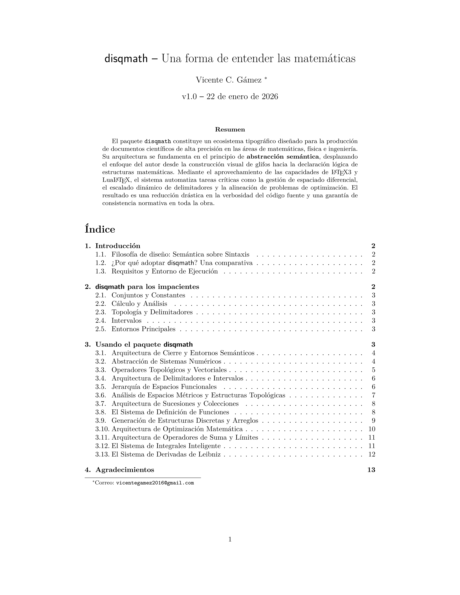

Paquetes de Macros
Desarrollo de paquetes .sty para extender la funcionalidad de LaTeX, automatizando tipografía matemática y creando entornos personalizados para el rigor académico.

Paquete de Macros
Paquete disqmath.sty
Paquete de macros diseñado para automatizar la tipografía matemática compleja. Proporciona entornos visuales elegantes para teoremas, definiciones, corolarios y demostraciones, asegurando consistencia visual y rigor matemático a lo largo de todo el documento.